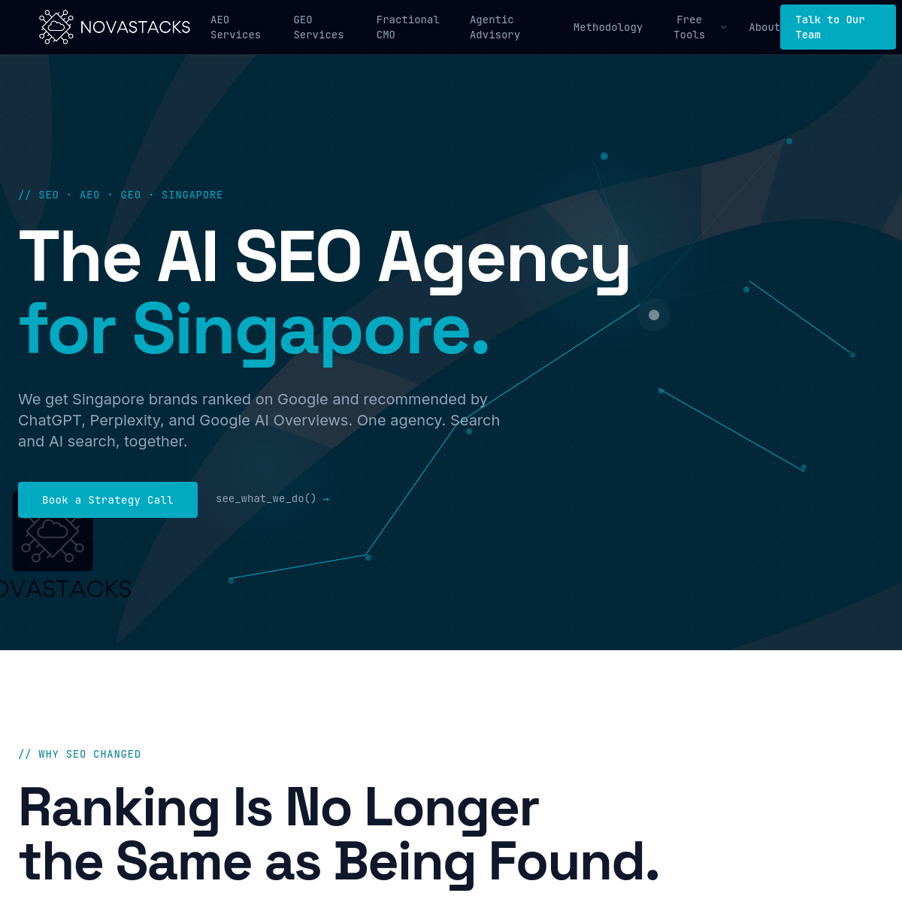
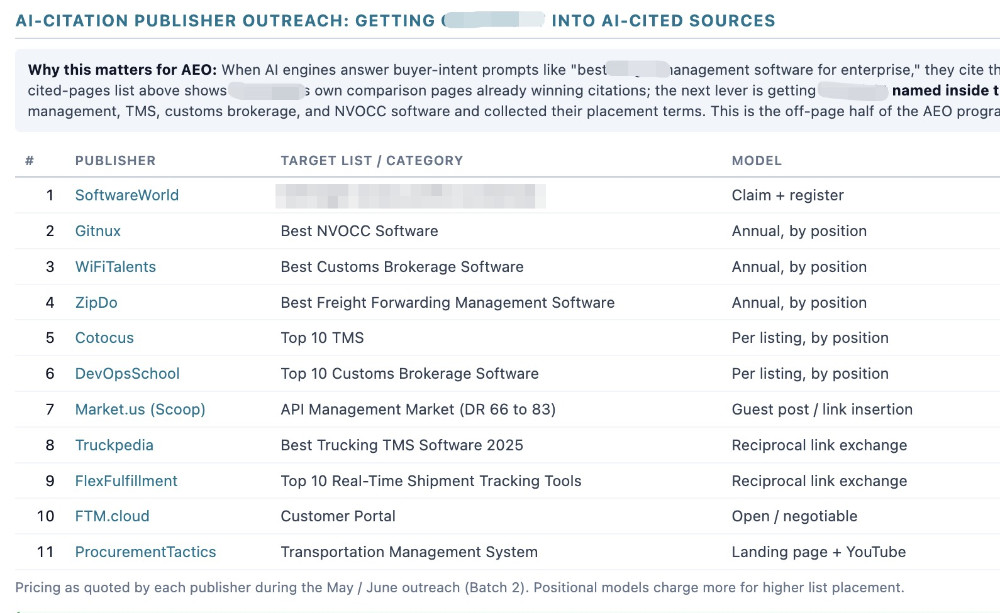
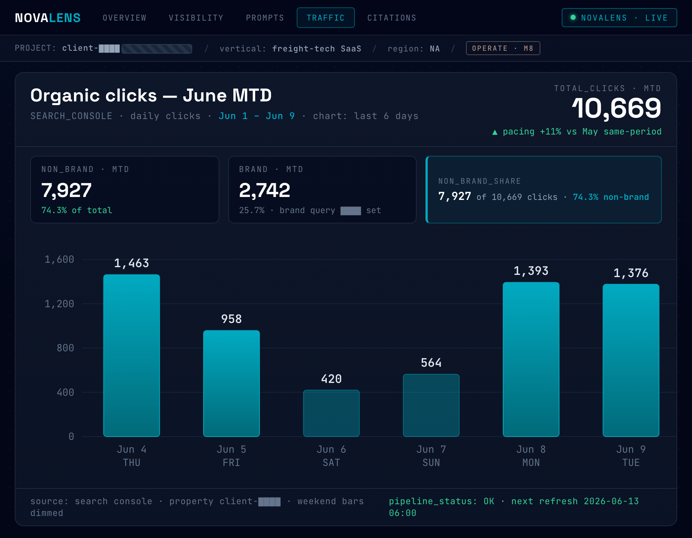

問題不是你的產品好不好，
是 AI 知不知道你的產品好。
Your product isn't the problem — whether AI knows it is.
「站對風口，
豬都會飛。」
—— 雷軍 · 小米集團創辦人
AI 搜尋，就是現在的風口。
被 AI 推薦的客戶，目前被市場——
嚴重低估。
SIMILARWEB · “The Downstream Impact of AI Visibility” (2026)
網站停留時長
15 vs 8 分鐘
瀏覽頁面數
12 vs 9 頁
訂單轉換率
vs 自然搜尋
資料來源：停留時長・瀏覽頁數 — Similarweb《The Downstream Impact of AI Visibility》(2026) ｜ 轉換率 — Microsoft Clarity（3×）、Conductor 2026（4.4×）
競爭對手對 AI 獲客能力的誤判，
是你最大的籌碼。
Your rivals are misreading AI-driven acquisition. That gap is your edge.
We help brands grow on the agentic internet.
NOVASTACKS · 亞太市場技術領先的 AI SEO 服務商

Buying decisions moved inside AI answers this year.
AI now answers the query before anyone reaches a link. "The click is now optional." — Amanda Natividad, SparkToro
Google searches showing an AI answer
One in four Google searches now opens with an AI answer, nearly double a year ago.
Conductor · 21.9M queries
US searches ending without a click
Two-thirds of US searches now end without any click.
SparkToro · clickstream
Conversion rate by traffic source
AI-referred visitors convert 42% more often than other traffic.
Adobe Analytics
Classic SEO: ten blue links compete for a click.

Google, "what is seo" — ranked pages, every visit a click away.
AI SEO / AEO / GEO: the AI answer mentions a few brands.

Google AI Overview, "aeo agency singapore" — the answer names Novastacks. Cited, not ranked.
Winning AI answers takes three disciplines. Most have one. Some have two. We run all three.
Expertise
Augmentation
Engineering
three
Run all three together and your brand becomes the answer AI gives — not just a link it lists.
Your strategy is set by senior operators, not handed to junior staff.
Tina Chu
Founder & CEO
Strategy. 20 years of marketing leadership at Expedia, Tencent and Klook sets your direction right the first time.
Builder & trainer. Certified SMU AI-marketing trainer; runs corporate agentic-system workshops for brands including tiket.com.
Eki Riandra
Head of Search & Commerce
Search authority. Ex-Tech SEO Head of Traveloka and Tokopedia; Google Product Expert.
Proven with Google. Co-authored the Tokopedia growth case study with Google.
NOVASTACKS 自主開發的 AEO 系統
Every AI answer is assembled from content worth quoting — the source — and from what the rest of the internet says about you — the echo. We engineer both, with five systems that are built and running, not advised.
Prompt Radar finds every question worth winning. Two source systems and the Echo Network go win them. The Proof Loop measures daily and reports in pipeline.

One buyer prompt through the method: the radar detects it, the source and echo tracks win it, the loop proves it.
「客戶現在都不跟我
討論 AEO 了？？」
“My clients don’t even bring up AEO with me anymore??”
三個月內，Google AI Overviews 聲量佔比衝上近四成。 
The CEO saw it in the pipeline before he saw it in a dashboard.
The email

Inbound enterprise lead — the prospect found them through ChatGPT, which recommended them over the market leader. January 2026.
The visibility that drove it

AI visibility climbing across every engine — Google AI Overviews, Perplexity and ChatGPT — tracked live in NovaLens through the engagement.
1 of the client's 6 most recent enterprise wins started with an AI shortlist.
“I had a conversation with AI… it narrowed it down to a top five. You guys were a top two.”
Enterprise buyer · B2B SaaS
Three ways to work with us.
Whichever you pick, the outcome is the same: your leads arrive pre-sold — AI already did their research and put you on the shortlist.
SEO & AEO Solution —
Done For You
We run the Source & Echo Method end to end.
Business-outcome focused. Your account stays with senior operators — never outsourced, never handed to juniors.
SEO & AEO Strategy
Advisory
The strategy and roadmap, without the operation.
Strategy-focused. Prompt portfolio baseline, the method strategy and a 90-day plan — handed to your team to run.
Agentic System
Building & Advisory
We build the capability with you.
Workshops and implementation that leave the system — and the skills — inside your team.
方法系統細節
The Source & Echo Method — five systems, in detail
Prompt Radar: built from your sales calls, not keyword tools.
Under 20% of brands are cited by both ChatGPT and Google for the same question — visibility only counts if it is tracked per engine.
Source track
Prompt Radar
SYS·01Most agencies
Prompt lists from keyword tools and educated guesses, checked monthly.
Novastacks
Three source families: commercial-intent keywords, actual long-tail customer queries, and unstructured customer-facing data — sales calls, reviews, support tickets. Expanded with engine fan-out, filtered to prompts where vendors get recommended, tracked daily per engine.
query fan-out·synthetic query expansion·prompt portfolio·per-engine baselines

Live in NovaLens. The week’s top visibility movers: per-engine cited / appears / absent status across the tracked prompt set.
Answer Architecture: proven in your server logs, not promised in an audit.
Source track
Answer Architecture
SYS·02Most agencies
Lead with content and PR because deep technical work is scarce; schema is a checkbox.
Novastacks
Entities, schema, llms.txt and passage structure led by the ex-Tech SEO Head of Traveloka and Tokopedia — then validated in your server logs, where AI crawler reads are visible.
entity disambiguation·schema / JSON-LD·llms.txt·passage extraction·AI bot log analysis

System view. Schema brackets, entity tags and passage-first structure on a page, with AI crawler reads confirmed in the logs.
First-Party Answers: your data, not recycled content.
Source track
First-Party Answers
SYS·03Most agencies
Say unique data earns citations, but never say where it comes from; ship AI-written volume.
Novastacks
We mine the underutilised proprietary data in your business — sales and support conversations, usage benchmarks, pricing intelligence — and turn it into tiers of content that shape how AI describes and recommends you. Engines cite what they cannot find elsewhere.
first-party data mining·sales-transcript insights·comparison pages·refresh cadence

System view. Sales calls, win/loss notes and support tickets assembled into comparison pages no competitor holds — the pages AI ends up citing.
Echo Network: the exact domains AI cites, not a generic media list.
60% of AI Overview citations come from URLs outside the top 20 organic results, and 85% of brand mentions sit on third-party pages. The echo decides who gets recommended.
Echo track
Echo Network
SYS·04Most agencies
Generic link building against a standard media list.
Novastacks
Citation mining first: the outreach list is the exact set of domains each engine already cites for your prompts — and unlinked mentions count.
citation mining·digital PR·unlinked brand mentions·review platforms

The outreach table, live. Eleven publisher targets mined from AI citations — each with the exact list to enter and the placement model quoted. Client masked.
Proof Loop: daily agents, not quarterly reports.
Operate
Proof Loop
SYS·05Most agencies
Quarterly audits, monthly PDFs, and a junior account team running execution.
Novastacks
Agents pull visibility data daily into NovaLens; senior strategists carry every meeting decision straight into execution.
daily prompt runs·NovaLens platform·AI share of voice·pipeline attribution

Live in NovaLens. The morning traffic read: daily clicks, brand / non-brand split, pacing against last month.